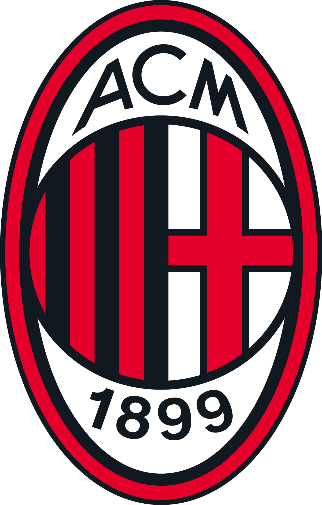

Mi cantante favorito es Eladio Carrion, un cantante de Puerto Rico conocido por hacer sobre todo canciones de trap, el album que mas me gusta de Eladio es Sauce Boyz, porque en el tiene canciones que yo las considero muy buenas como por ejemplo mi cancion favorita Kemba Walker.
Deportes
Futbol, el mejor deporte de todos, las emociones que el futbol hace sentir en la gente son inigualables ante cualquier otro deporte. Hablando mas sobre mis gustos personales y el futbol, mi equipo favorito es el AC Milan de Italia, este es mi equipo favorito desde que tengo 7, hablando del Milan, mi jugador favorito juega en ese equipo, su nombre es Theo Hernandez, que es un lateral izquierdo frances, que es una promesa del deporte.
AC Milan

AC Milan es un equipo italiano, creado en 1899, bajo el nombre de Milan Cricket and Football Club, que posteriormente pasaria a llamarse Associazione Calcio Milan, este historico club es conocido por ser un equipo muy ganador, poseyendo en su plamares una inmensa cantidad de titulos, entre los mas importantes tenemos:
- 7 Champions League
- 19 ligas italianas
- 5 Copas Italia
- 7 Supercoppas italianas
- 4 mundiales de clubes
- 5 Supercopas de Europa
Ademas, Milan tuvo en sus filas a grandes leyendas de la historia del deporte, albergo a grandes futbolistas tanto italianos como de todo el mundo, y si nombramos a toda la lista de leyendas del AC Milan podriamos estar horas y horas, sin embargo mostraremos algunas de las mas importantes:
- Paolo Maldini
- Franco Baresi
- Ronaldinho
- Marco Van Basten
- Ruud Gullit
- Zlatan Ibrahimovic
- Paolo Rossi
- Gennaro Gattuso
Aca muestro un video sobre AC Milan y sus 7 Champions League:
Para mas informacion sobre el Milan visitar este link:
AC Milan WikipediaTheo Hernandez
Hablando de Theo Hernandez, Theo es un jugador nacido en Francia, utiliza el dorsal numero 19 en el AC Milan y el 22 en la seleccion francesa, es un jugador bastante joven, actualmente tiene 25 anios de edad, sin embargo, ya tiene numerosos titulos ganados, como 1 Champions League, 1 Serie A y varios torneos del futbol espanol
Ahora mostramos videos de sus mejores jugadas:
Para mas informacion sobre Theo Hernandez visitar este link:
Theo Hernandez Wikipedia